一、登入與改密碼
第一次登入
- 輸入你們店的門市代號（管理者會告訴你）。
- 密碼輸入
000000（六個零）。
- 按 登入。
- 系統會請你設定自己的新密碼：輸入目前的密碼
000000，再輸入兩次新密碼（至少 8 個字），按 儲存新密碼。
- 新密碼不能再用 000000。請設成只有你們店知道的密碼，並記下來。
之後登入
手機會記住門市代號，只要輸入密碼就好。登入後大約 12 小時會自動登出，到時重新登入即可。
想換密碼
登入後按畫面上方的 改密碼，照畫面輸入舊密碼與新密碼。
忘記密碼
- 請找管理者，請他在後台幫你重設。
- 重設後，密碼會回到
000000。
- 用 000000 登入，再照上面的步驟設定新密碼。
連續輸入錯誤 5 次，帳號會暫時鎖住 15 分鐘。請等一下再試，或請管理者幫你解鎖。
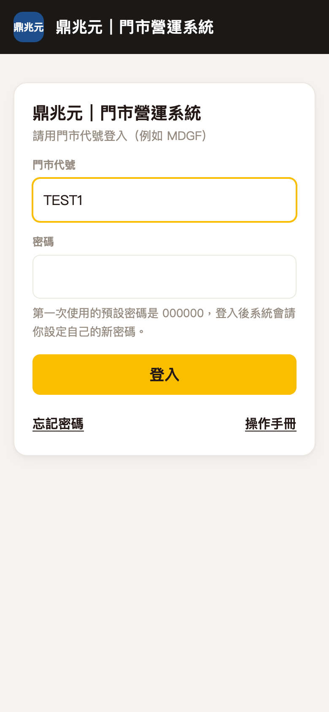
登入畫面
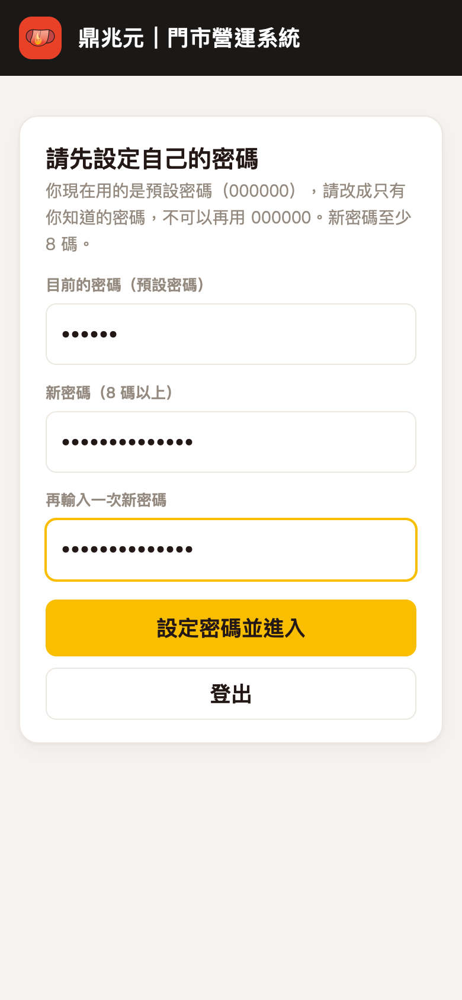
第一次登入：設定自己的新密碼
二、首頁
登入後的首頁就是 待辦與異常：每個系統一組，列出這家店還沒處理的事。左側欄是各個系統，點進去就能使用，要回來點左側欄最上面的 首頁。
- 紅色左邊線：有異常，例如貨單辨識失敗或被退回、要重拍。
- 金色左邊線：要留意，例如貨單送出超過 2 小時還沒辨識完。
- 品牌色左邊線：待辦，例如本月還有幾天沒核定、有新手機等核准、上個月還沒月結（每月 5 號之後提醒）。
- 每一列都可以點，會直接跳到要處理的那一頁；左側欄系統名稱右邊的數字是該系統的件數（有異常時是紅色）。
- 某個系統顯示 沒有待辦＝一切正常；顯示 暫時讀不到＝那個系統這一刻連不上，稍後重新整理，不影響其他系統。
各系統的用途：
- 貨單辨識：拍進貨單照片傳給總部。
- 收支登記：記每天店裡的現金支出與收入。
- 值班核定：主管核定同仁的上下班工時、管理裝置與名冊。
如果左側欄少了某個系統，表示你們店還沒開這項功能，請洽管理者。
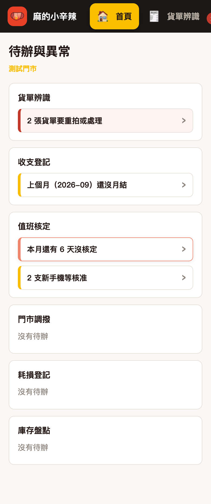
首頁：待辦與異常
手機上方是系統列，左右滑動可看到全部系統
三、貨單辨識
上傳一張貨單
- 點首頁的 貨單辨識。
- 在「廠商」選這張貨單是哪一家廠商送的。找不到就選「其他」，再自己打廠商名稱。
- 按 拍照（或 從相簿選），把整張貨單拍清楚。一張貨單可以拍好幾頁，一次最多 6 張。
- 預覽看一下，拍糊或拍錯的照片按旁邊的叉叉刪掉重拍。
- 確定沒問題，按 送出這張貨單。
- 看到「已送出」就完成了。只要按一次，不用重複按。
拍照小技巧：貨單平放、四個角都拍到、光線亮一點、字看得清楚。
看送出的結果
切到 我的貨單，可以看到最近送出的貨單和處理狀況。按 看照片 可以看你傳的照片。如果總部退回，會寫上原因，照原因重新拍一張再上傳。
網路不好怎麼辦
送出時如果顯示連不上，先不要關掉頁面，等網路好一點再按一次送出。系統會認得是同一張，不會重複上傳。
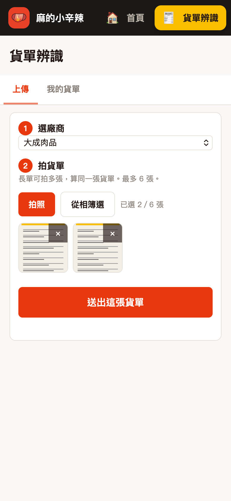
上傳：選廠商、拍照、送出
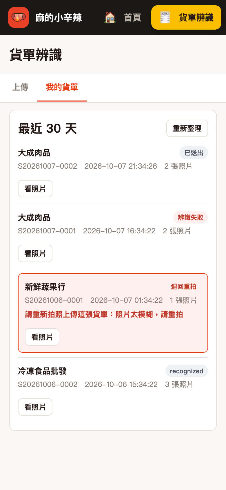
我的貨單：看處理狀況
四、收支登記
用來記店裡每天的現金進出，取代紙本的「現金支出明細表」和「現金收入明細表」。會計月底會直接匯出來入帳。
記一筆
- 點首頁的 收支登記，進到 記帳 分頁。
- 選是 支出 還是 收入。
- 選日期（預設今天）、填項目名稱、選科目、輸入金額。常用的項目名稱系統會幫你記住，下次直接點選。
- 單據選 統一發票 或 收據／無發票。選統一發票時，系統會自動算出未稅金額與稅額。
- 有收據的，可以拍照附上。
- 按 送出這一筆，畫面會顯示收據編號。
按一次就好。網路慢的時候多按幾次，系統也不會重複記。
看明細、修改
- 切到 明細 分頁，選要看的月份。
- 可以看到每一筆，以及當月的支出、收入合計。
- 按某一筆的 修改，可以改日期、金額、項目名稱等，改完按 儲存修改。
記錯了：作廢
- 在 明細 找到那一筆，按 作廢。
- 寫下作廢原因，按 確定作廢。
- 作廢的那一筆不會被刪掉，會留著並標示「作廢」，只是不再算進合計。收據編號也會保留，這樣帳才查得清楚。
- 然後重新記一筆正確的。
「回應太久」怎麼辦
如果按送出後出現「回應太久，不一定沒記進去」，先不要重複記。請切到 明細 看看那一筆有沒有出現：
- 有出現：已經記好了，不用再記。
- 沒有出現：再記一次。
月結
- 每個月底（或會計通知時），到 月結 分頁。
- 先核對當月合計沒問題。
- 按 鎖定這個月。鎖定後這個月不能再新增、修改或作廢。
- 鎖錯了或需要補記，可以按 解除鎖定，或洽管理者。
鎖定前請確認當月每一筆都已記完，也都核對過。
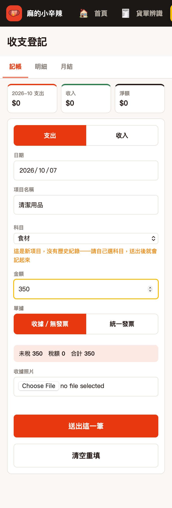
記帳
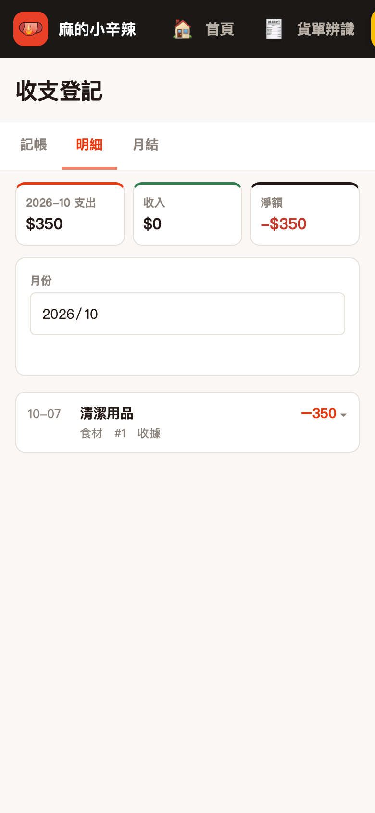
明細
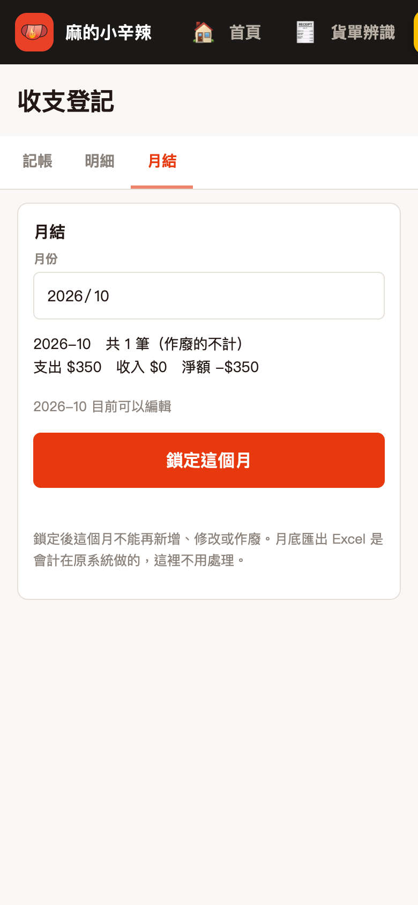
月結
五、值班核定
給值班主管用：核定同仁的工時、管理打卡用的手機（裝置）、維護員工名冊、發布打卡公告。
第一次進入：設定核定通行碼
- 點首頁的 值班核定。
- 輸入核定通行碼
0000（四個零），按 進入。
- 系統會請你改成自己的核定通行碼：輸入兩次新的（至少 4 碼，不能是 0000），按 儲存並進入。
- 之後進入都輸入你設定的新通行碼。登入期間只需要輸入一次。
核定通行碼和登入密碼是兩組，請不要設成一樣。忘記時請管理者在後台「重設為 0000」，再從上面第 2 步開始。
核定工時
- 切到 核定工時。上面的日期列可以按 ‹ 前一天、› 後一天，或按 今天，也能直接選日期。
- 如果上方出現「本月還有 N 天沒核定」，點裡面的同仁名字，會直接跳到那一天並展開那位同仁。
- 每位同仁一張卡，點一下展開。卡片上看得到當天的打卡與參考時數。系統會幫你展開「下一位還沒核定的人」，核完自動翻到下一位。
- 檢查上班時段（有預設班別會先填好）。要多一段按 ＋ 加一段，要刪掉一段按該段右邊的 －。核定時數會即時算給你看。
- 同仁請假就在「請假註記」選假別、填時數（每 0.25 小時一格）。出差一樣選「出差」，時數填幾小時就核定幾小時，出差那段不用再填進上班時段。
- 「遲到分鐘」留空＝系統自動判定；填 0＝認定不算遲到；填數字＝以你填的為準。
- 按 送出核定，確認畫面核對無誤後按 送出。成功後卡片會顯示「已核定」。要修改就再展開、改完按 重新送出核定。
有休息時間的店（例如中央廚房），預設班別會自動分成兩段、中間標示休息。當天沒休息就按 今天沒休息 → 併成一段。
裝置核准
同仁換手機或第一次打卡，要先經過主管核准。切到 裝置核准，看到「新裝置待核准」的卡片，確認是本人的手機後按 核准；不認得的按 拒絕。卡片若寫「有打卡超出門市範圍」，核准只會解除裝置這一關，超出範圍的那幾筆仍然不會入帳。
員工名冊
切到 員工名冊：
- 新進同仁報到：輸入姓名按 建立帳號，會產生他的專屬打卡連結，按 複製連結 傳給他，請他用 Safari 開、加入主畫面。
- 同仁異動：選同仁按 設為離職，他立刻不能打卡，過去的紀錄都保留。設錯了，在「已離職」清單按 恢復在職。
公告
切到 公告：輸入內容（最多 120 字），需要時選「顯示到」的日期（留空＝一直顯示），按 發布公告，同仁打卡頁最上方就會看到。下面的清單可以按 下架，之後也能按 重新顯示。
連續輸入錯誤核定通行碼 5 次，會暫時鎖住 15 分鐘。
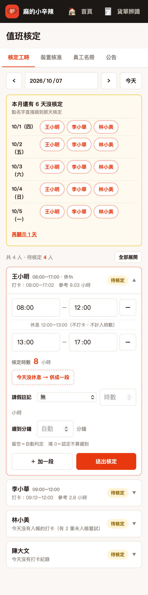
核定工時
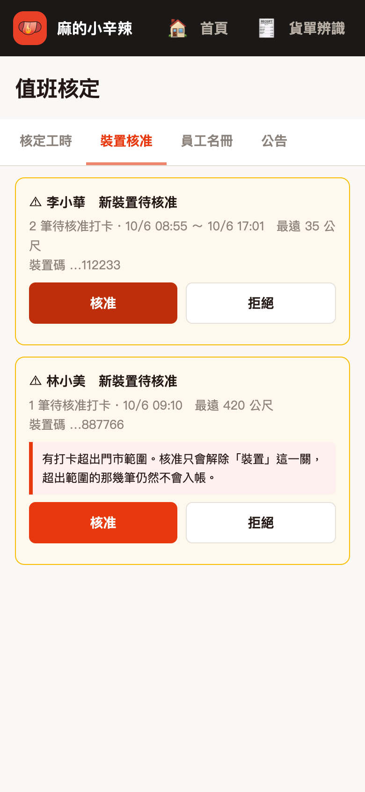
裝置核准
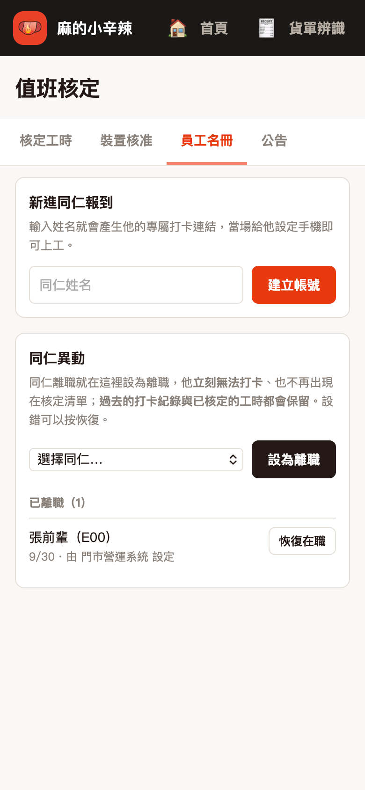
員工名冊
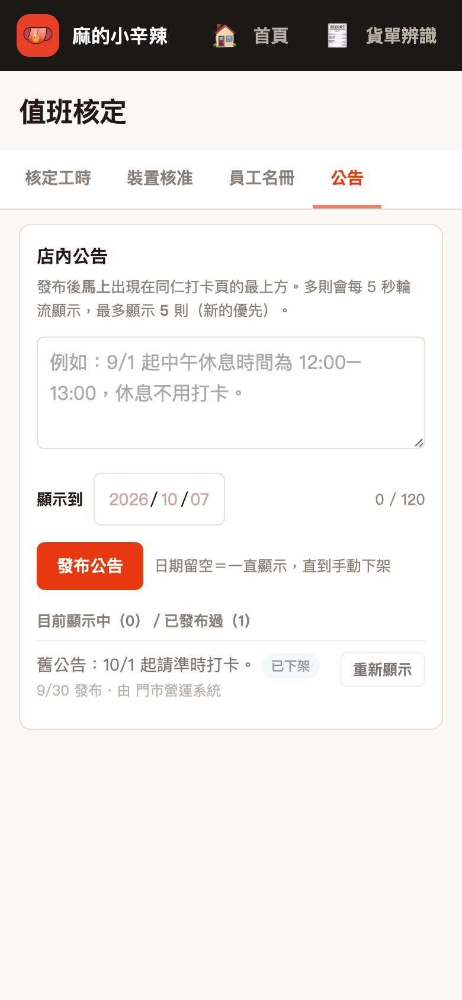
公告
六、門市調撥
店和店之間調貨用：開單、出貨、簽收、查單，都在這裡做。你的店是哪一個調撥節點，由管理者設定好，你不用選。
開單與出貨（調出的店）
- 點 門市調撥，切到 開單。調出方是你們店，不能改；選 調入方，確認調撥日期與預計到貨日。
- 填 打包人。每個品項：打名稱（會跳出用過的品項，點一下就帶入規格、單位、單價）、選類別（食材／包材／雜貨，一定要自己點）、填單價與數量，下面會自動算小計與應撥總額。
- 按 存草稿，會得到單號。點「看這張單」進入。
- 貨裝好、要送出時，填「操作人姓名」，按 確認出貨。出貨前可以按「回去編輯」改內容。
簽收（收貨的店）
- 首頁或 待辦 的「等你簽收」會出現這張單，點進去按 簽收這批貨。
- 逐列填 實際簽收數量。和應撥不一樣時，系統會自動算差異，並要你選一個原因（短少、損壞…），選「其他」可以自己打（20 字內）。
- 填簽收人姓名，按 確認簽收。簽收後就鎖定，不能再改。
查單、修改、刪除
- 查單：可用單號、日期區間、狀態查，也能按「本月」。上面的合計是整個查詢結果的應撥總額（已刪除的不算）。
- 修改：已出貨、還沒簽收的單，調出的店可以改實收數量與原因，每次修改都會留紀錄。
- 刪除：草稿和已出貨的單，由調出的店刪除；單不會消失，會標成「已刪除」。已簽收的單要刪除，請洽會計。
看到「這家店還沒有設定調撥節點」或「門市調撥尚未開通」，是管理者還沒設定好，請通知管理者。
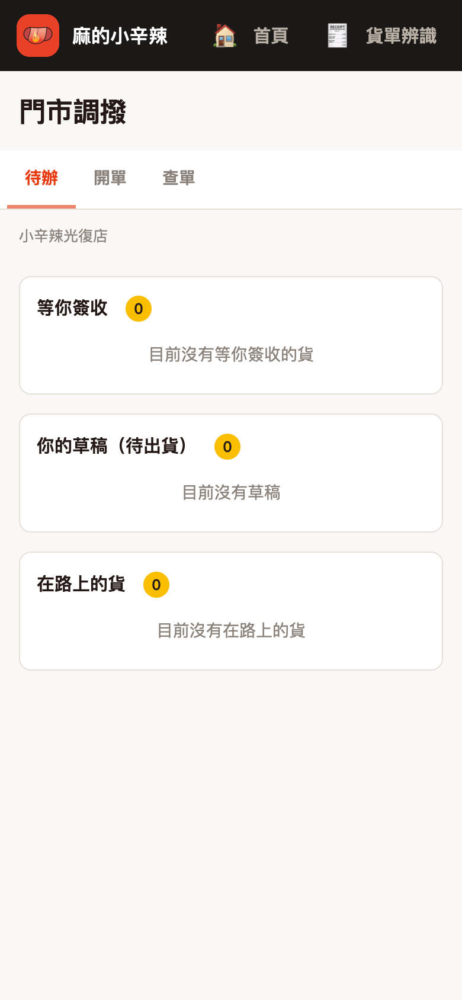
待辦
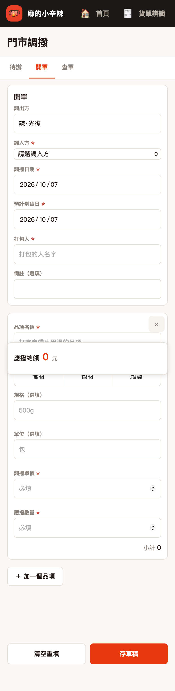
開單
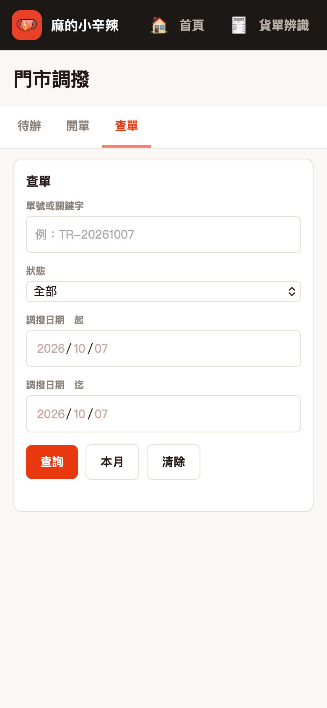
查單
七、耗損登記
記店裡每天報廢、過期、備料失誤等損耗掉的食材與物料，系統會依成本表自動算出金額，統計頁可以看每天、每週、每月損失多少、哪一類最多。
登記一筆
- 點左側的 耗損登記，進到 登記 分頁。
- 選日期（預設今天，可以補登前幾天）。
- 輸入 品名：打幾個字，下面會列出成本表裡的品項，點一下就會帶出品類、單位、單位成本。
- 輸入 耗損量，金額會自動算好（耗損量 × 單位成本）。
- 選 原因。選「其他」時要再寫一句簡短說明。備註可以不填。
- 按 送出登記，畫面會顯示已登記的品名與金額，下方「今天這幾筆」也會多一列。
打了成本表沒有的新品名，系統會請你補上單位和單位成本，送出後自動加進成本設定，下次就不用再補。
登記錯了怎麼辦
在「今天這幾筆」那一列按 作廢，再按一次 確定作廢？。作廢的紀錄不會刪除，只是不再計入統計；要更正就重新登記一筆正確的。想看別天的，改上方日期。
統計
- 切到 統計 分頁，選 本日／本週／本月，或選 自訂 填起迄日期。
- 最上方是這段期間的耗損總金額，旁邊會比較上一個同樣長度的期間。
- 中間的長條圖是每天的金額。
- 下方有三份排行，金額由大到小：按品類（點開看品項）、按品名（點開看原因，先顯示前 10 項，可按「顯示全部」）、按原因（點開看品項）。
- 要拿去對帳，按 匯出 CSV；要印出來按 列印。
成本設定
切到 成本設定 分頁：填品名、品類、單位、單位成本按 儲存品項 新增；搜尋後按 修改 可以改成本；不再使用的品項按 停用（停用後不會出現在登記的提示，也能再啟用）。
改單位成本只影響之後登記的金額，過去的紀錄金額不會變。墨竹亭的成本表是四家店共用的，改一家全部一起生效。
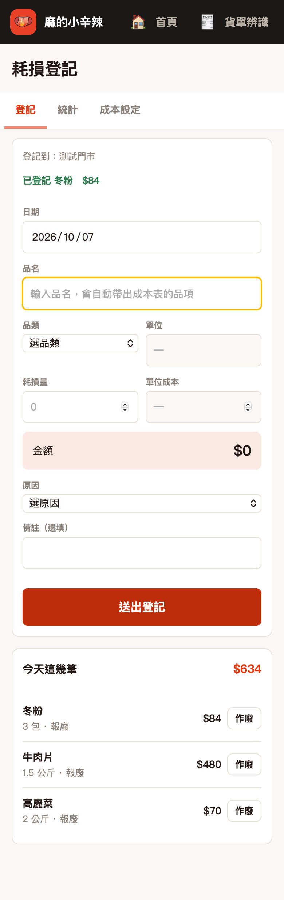
登記
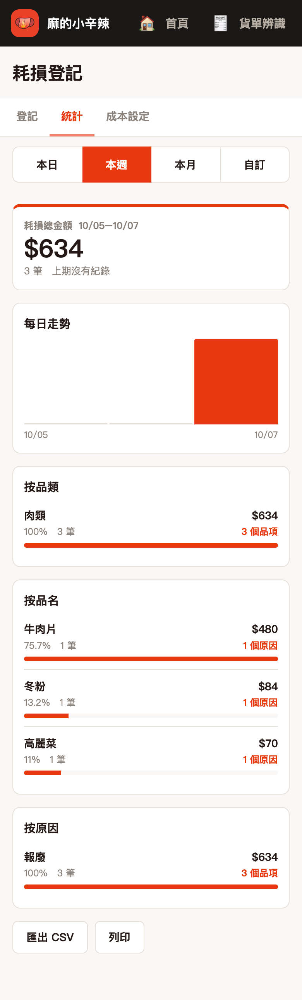
統計
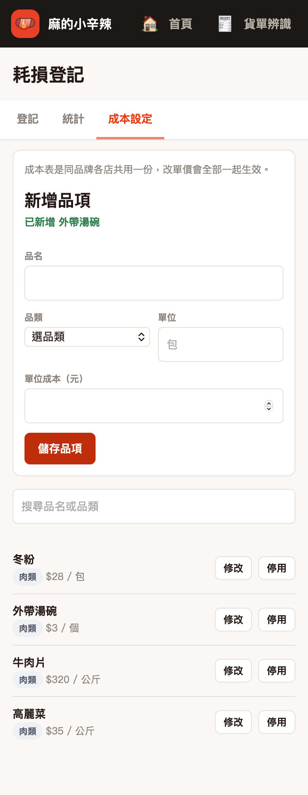
成本設定
八、庫存盤點
每天或每週盤攤車與現場的庫存，算出庫存金額，偏低、偏高的品項會標出來。資料存在公司的伺服器，換手機、清快取都不會不見，同一家店的手機和電腦看到的是同一份。
盤點
- 點左側欄的 庫存盤點。攤車庫存、現場庫存 兩頁分開盤，每個分類（蔬菜、火鍋料…）一張卡。
- 在分類最下面的「選擇商品…」選一個商品，按 ＋ 加一列。再輸入 數量，右邊會馬上算出這一列的金額。規格預設是商品的規格（例如一箱 12000 克），這一列要不一樣可以直接改。
- 輸入完停手約 3 秒就會自動存，不用按存檔。右上角的狀態燈會寫「已存 14:32」；寫「存檔中」就是正在存；寫「存檔失敗」代表這次沒存進去，按一下狀態燈重試，數字不會丟。
- 切到別的分頁、別的系統，會立刻存一次。還有沒存好的時候想關掉網頁，瀏覽器會跳出提醒，請先等狀態燈變成「已存」。
- 分類名稱可以直接改；右邊 ✕ 刪除整個分類（裡面的列會一起刪）；🧹 一鍵清除數量 只把數量歸零，列和規格保留。
兩個人同時盤同一家店，最後存的人的數字會蓋過去。如果剛好蓋掉了別人剛改的那一列，畫面上方會提示「有人剛剛也改過」，按 重新讀取 看最新的結果。
商品價格與偏低、偏高
- 商品價格 分頁可以改品名、價格、規格、單位；改完離開欄位就自動存。「每克／件」成本＝價格 ÷ 規格。也能新增商品、新增類別、刪除商品（刪掉後，攤車和現場裡同一個商品的盤點列會一起移除）。
- 每個商品右邊有 低於、高於 兩格（單位是元，指這一列盤點出來的金額）。金額低於「低於」就標「偏低」、高於「高於」就標「偏高」，留空代表不設定。新增的商品預設「高於 2000 元」。
列印與匯出、完成盤點
- 列印與匯出 分頁最上面是食材、包材、全店的庫存金額，下面是庫存彙整（同一個商品攤車＋現場合在一起）。「未盤點品項」是攤車和現場都沒有數量的商品。
- 🖨️ 列印 PDF 會開瀏覽器的列印畫面，目的地選「另存為 PDF」就能存檔；📊 匯出 Excel 下載可以用 Excel 開的 CSV；📤 匯出資料（JSON） 是完整備份。
- 盤完之後按 ✅ 完成盤點，這一輪的數字會留在 歷史 分頁，之後隨時可以按 查看。平常有改動時，系統每隔 5 分鐘也會自動留一筆快照。
光復店：把舊版手機上的資料搬進來
舊版庫存 app（eason0728.github.io/mala）的數字只存在那支手機裡。請依下面兩步，把它搬進新的系統：
- 在舊版匯出 JSON：用原本盤點的那支手機，開舊版庫存 app，點下面的 列印 分頁，按 📤 匯出資料。手機會下載一個檔案，名字像
光復店_庫存管理20261007.json（存在「檔案」app 的「下載項目」）。先不要清掉舊版的資料。
- 在新版匯入：打開營運系統登入光復店，點 庫存盤點 → 從舊版匯入 分頁。按「選擇檔案」選剛剛那個 JSON（或把檔案內容整段貼進下面的框），按 預覽。
- 預覽會列出「目前」和「匯入後」的商品數、盤點列數、全店金額，還沒有匯入。確認沒問題，按 確認匯入（覆蓋目前資料），再按一次確定。
- 匯入完成後，到 攤車庫存／現場庫存 檢查數字。匯入前新版裡的資料會先備份在 歷史（標「匯入前備份」），搬錯了可以去查看；不放心的話，舊版 app 的資料也還在。
匯入會整包覆蓋這家店目前的商品、價格、門檻與盤點，不是合併。只在第一次搬資料時做就好，之後請直接用新版盤點。
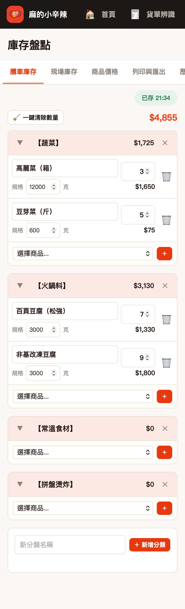
攤車庫存
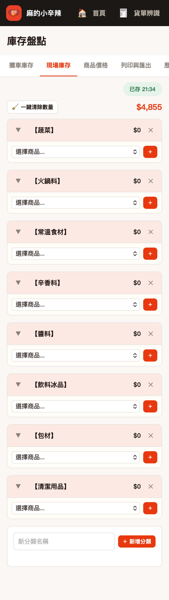
現場庫存
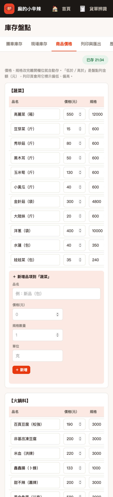
商品價格
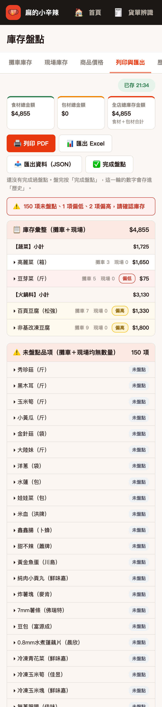
列印與匯出
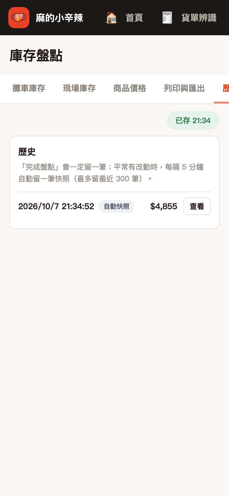
歷史
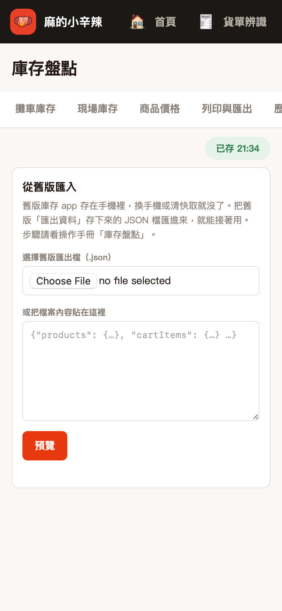
從舊版匯入
九、遇到問題
- 登入不了：確認門市代號、密碼。忘記密碼請找管理者重設。被鎖住請等 15 分鐘。
- 左側欄看不到某個系統：那項功能還沒開給你們店，請洽管理者。
- 畫面一直轉圈或連不上：先確認網路，換 Wi-Fi 或行動網路試試，稍後再按一次。
- 登入一段時間後被登出：這是正常的，重新登入即可，沒送出的資料請重新輸入。